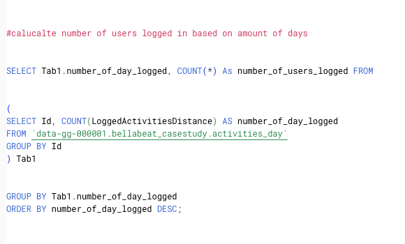
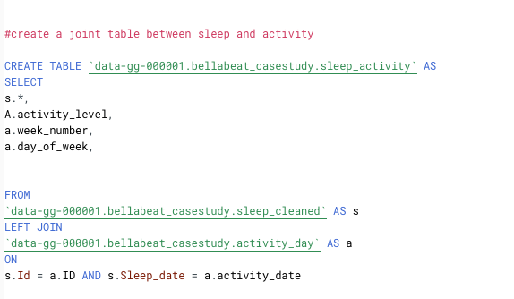
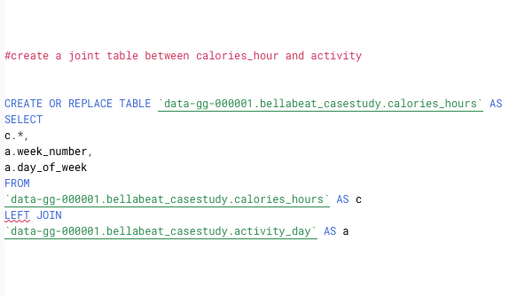
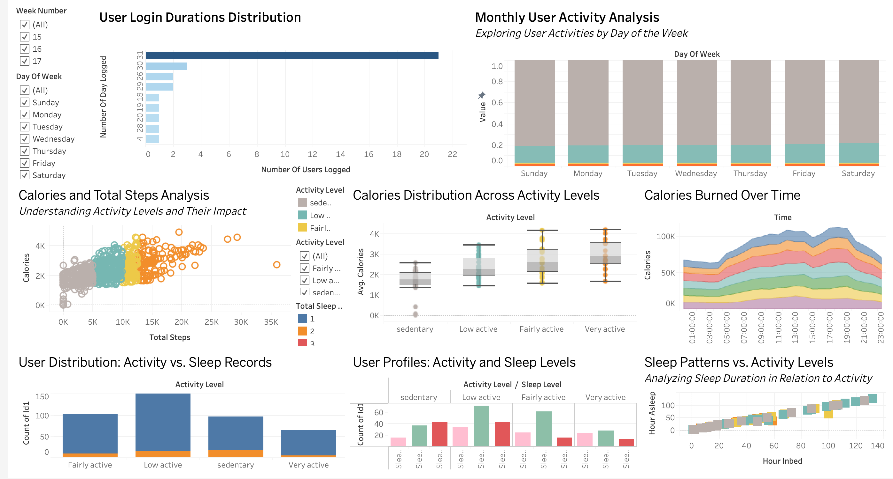
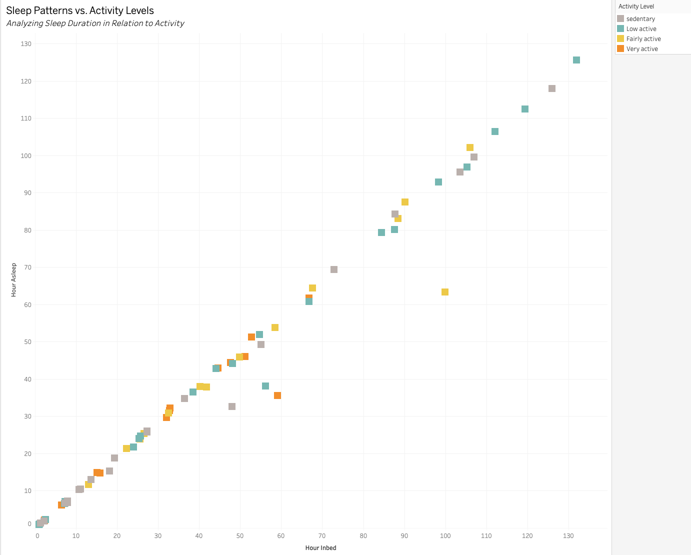
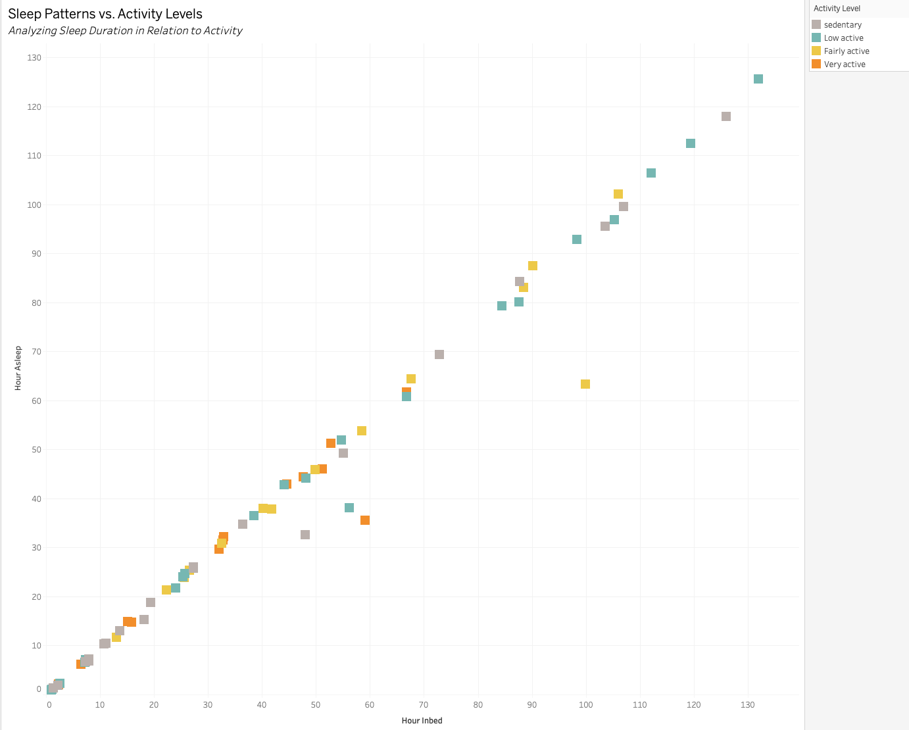

Urška Sršen and Sando Mur founded Bellabeat, a high-tech company that manufactures health-focused smart products. Sršen used her background as an artist to develop beautifully designed technology that informs and inspires women around the world. Collecting data on activity, sleep, stress, and reproductive health has allowed Bellabeat to empower women with knowledge about their own health and habits.
As a data analyst, you have been asked to analyze smart devices in order to gain insight into trends of how consumers use non-Bellabeat smart devices. By using discovered trends to support guiding future marketing strategies. These findings and the high-level recommendations will help to unlock new growth opportunities for the company, and are presented to the Bellabeat executive team.
To analyze this project, I use Google BigQuery and Tableau to clean, transform, and visualize data insights that I gained.
Data source: Fitbit Dataset
(*) Some Notes:
From the results, there are 24 unique users in the sleeps_day dataset, 14 unique users in the heartrate_seconds dataset, and only 8 unique users in the weight_day dataset, while other datasets have 33 unique users. Hence, with only 8 & 14 unique users, sleeps_day & heartrate_seconds are not significant to gain insights.
Key finding: The majority of users (21) logged in consistently for the entire month, indicating a highly engaged user segment. This high level of engagement suggests that a significant portion of users are committed to using the platform regularly.
Challenge: The users who logged in for only half of the month (< 15 days) might indicate a retention challenge. Understanding why some users stop using the platform after a short period can help improve retention strategies.

To analyze the relationship between sleep and activity level of users, I created a joint table.
To analyze the relationship between Calories burned and activity level of users, I created a joint table.
In this interactive dashboard, you have the flexibility to explore insights by filtering based on week number, day of the week, and activity level. This provides you with a comprehensive overview and allows you to recognize trends within the data easily.
Explore the interactive dashboard in Tableau for a comprehensive view of users insights by clicking the "View Dashboard" link below.
Key Finding:
The majority of users (21) logged in consistently for the entire month, indicating a highly engaged user segment. This high level of engagement suggests that a significant portion of users are committed to using the platform regularly.
Key Finding:
Key Finding:
Key Finding:
 
